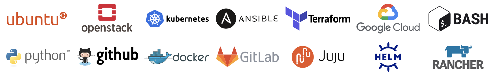

From Code to Cloud: Engineering Tomorrow's Infrastructure¶

What if infrastructure could adapt intelligently?
What if deployments were truly seamless and reliable?
I'm Muhammad Ahmad, and I turn these concepts into production reality.
What I Build
Infrastructure platforms that teams can operate with confidence.
My work is not limited to standing up clusters or wiring pipelines together. I focus on the operating model around the platform: security boundaries, ownership, recovery paths, observability, change control, and the automation that keeps production systems understandable.
Secure Research Infrastructure
Trusted Research Environments, sensitive genomic workloads, controlled access paths, and cloud platforms that support research without weakening governance.
Private Cloud & Platform Architecture
Kubernetes, OpenStack, Ceph, OpenShift, and Rancher shaped into reliable platform foundations rather than disconnected infrastructure components.
Automation, Reliability & Migration
Delivery pipelines, image workflows, backups, monitoring, and migration patterns that reduce manual work and make platform state easier to trust.
Technical stack by operating layer
A practical map of the infrastructure tools I use in production.
A layer-by-layer view of the stack behind the platform work: cloud substrate, orchestration, automation, delivery, security, observability, and performance primitives.


Technical Depth¶
Cloud substrate
Compute, storage, network, tenancy, and cloud service foundations.
Orchestration and runtime
Cluster lifecycle, application packaging, ingress patterns, and workload placement.
Provisioning and configuration
Declarative infrastructure, bare-metal provisioning, configuration, and repeatable builds.
Delivery and engineering tooling
Source control, CI/CD, image builds, scripting, and operational utilities.
Security and identity controls
Hardening, vulnerability scanning, identity integration, and secure service boundaries.
Performance and network primitives
Hardware-aware infrastructure for packet-heavy and latency-sensitive workloads.
Career Snapshot¶
Cloud security, Trusted Research Environments, Kubernetes on OpenStack, GCP services, and research platform operations.
2022 - 2024 CanonicalCustomer-facing telco cloud delivery across EMEA using open infrastructure, automation, observability, and secure deployment patterns.
2018 - 2022 xFlow ResearchOpenStack, OpenShift, NFV, edge cloud, Dell EMC-aligned automation, and technical team leadership.
How I Approach Platform Work¶
Data sensitivity, compliance, failure modes, ownership, and support expectations shape the architecture before tools are selected.
A platform should be understandable under pressure: observable, recoverable, documented, and safe to change.
Good automation creates reviewed changes, repeatable delivery, visible drift, and recovery paths that teams can trust.
Explore
Looking for secure platform architecture with production context?
Explore my experience, technical writing, and platform capabilities across research infrastructure, telco cloud, OpenStack, Kubernetes, security, and automation.